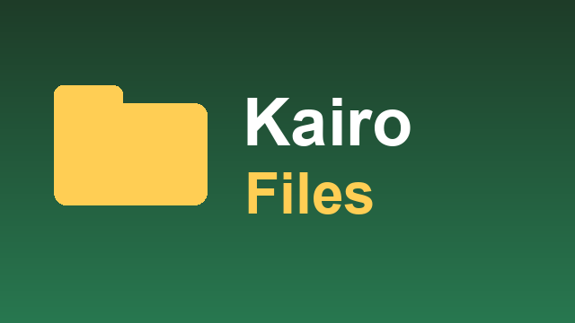

← Retour à l'accueil de Kairo


Kairo Files
Le gestionnaire de fichiers pensé pour la télécommande : la box et les clés ou disques USB (place libre affichée), puis Téléchargements, Films, Musique et Images en accès direct.

Le gestionnaire de fichiers pensé pour la télécommande : la box et les clés ou disques USB (place libre affichée), puis Téléchargements, Films, Musique et Images en accès direct.
OK ouvre un dossier ou un fichier dans la bonne appli : vidéos, musiques, PDF et textes dans Kairo Player, l'installateur d'Android pour un APK ; « Ouvrir avec… » pour choisir.
ZIP, RAR, 7z, TAR, GZ, BZ2, XZ : voir le contenu, « Extraire dans un dossier » ou « Extraire ici », avec progression.
RAR 5 et archives protégées par mot de passe : « Ouvrir avec… » une autre appli.
Appui long ou touche Menu : copier, couper, coller, renommer, supprimer (avec confirmation), propriétés, envoyer au téléphone (avec Kairo Send Files).
Avec progression et annulation, place vérifiée avant de copier ; d'une clé USB vers la box, le déplacement passe par une copie.
Tri par nom (ordre naturel : « Épisode 2 » avant « Épisode 10 »), date ou taille ; fichiers cachés à la demande.
Retour revient au dossier parent, sur l'élément quitté.
Rangée « Nos applications » de l'accueil : installation et mises à jour en un clic.
Téléchargez kairo-files.apk, puis installez-le par clé USB ou adb install.
L'autorisation « accès à tous les fichiers » est demandée au premier lancement. Si la box n'a pas l'écran de réglage :
adb shell appops set com.vantaflow.kairo.files MANAGE_EXTERNAL_STORAGE allow
Chaque appli se propose et s'installe en un clic depuis Kairo.
Le launcher Android TV, fluide sur les petites box.
Vidéos, photos et musique de la box et des clés USB.
Fichiers, textes et liens entre le téléphone et la TV.
L'écran du Mac ou du PC Windows sur la TV.
Le téléphone devient la télécommande.
Le lecteur IPTV, intégré à Kairo.